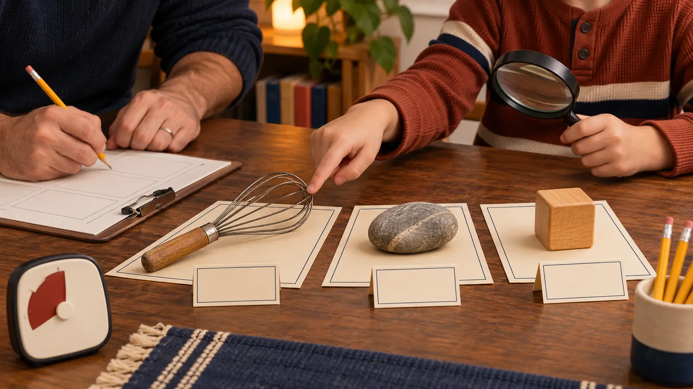

0–5 · choose
Each person proposes one safe object. The adult vetoes sharp, fragile, private, valuable, chemical, medicine, battery, food and unknown items. Stop at three.
AT HOME · 30 MINUTES · NO-SPEND · EXPLORATION
Do not decorate the whole house. Choose three safe objects, separate what you see from what you assume, write one honest label each, and close the museum after a two-minute tour.

This is a school-night activity, not a home reorganization project. Pick three ordinary, safe objects from different categories: one tool, one natural object collected lawfully, and one object with a known family use works well. Put each on a sheet of paper. Look closely. Write a label with three lines: what it is, what you can see, and one question that remains.
The Smithsonian Learning Lab describes object-based learning as inquiry that uses objects to build close looking, critical thinking, problem solving and communication. Its framework moves through Observe, Think, Connect and Reflect. That is the backbone here. The family does not need a login, museum-quality artifact, display case or printable kit.
Cost is zero when the household already has paper and pencils. Do not buy display stands, magnifiers or craft supplies for a 30-minute proof. If paper is scarce, say the labels aloud and make one shared note. The activity is for school-age kids; younger siblings can choose a color or shape with direct supervision but should not handle small parts.
Good candidates include a wooden spoon, smooth stone from your own property, postcard without a private address, old sports whistle with cord removed, measuring cup, toy block, paintbrush or nonworking manual kitchen tool. Clean objects enough for handling but do not polish away wear you want to observe.
Skip knives, needles, glass, medicine, batteries, magnets, firearms or replicas, chemicals, moldy natural material, sentimental objects that cannot tolerate handling, anything with private contact information, and objects collected where removal was prohibited. Do not present cultural, archaeological or natural-history material with a made-up origin. If an object may be significant, leave it in place and ask the appropriate land manager or expert.
Observe: list only visible, audible or measurable details. “The handle has six scratches” is observation. Think: offer a cautious explanation: “The scratches may come from use.” Connect: relate it to a known routine or a reliable source. “We use it to mix pancake batter” is a household fact. Reflect: ask what is missing: who made it, when, from what exact material, or how its design changed.
Do not start with a search engine. Close looking comes first. If the family researches one question afterward, use a manufacturer, museum, library or other primary source and record the link. The claim-check lesson uses the same habit: source the claim, not the confidence.
Use this five-line template:
If a grandparent supplied a memory, name it as a memory: “Grandma Lee remembers using this at holiday dinners.” Do not convert memory into manufacturing history. The oral-history plan explains consent, attribution and keeping a family recording private.
The three objects need a visible relationship. Try “tools that change material,” “three kinds of wear,” “found / bought / given,” or “objects that fit in one hand.” State the rule at the start of the tour. A category is an editorial choice, not proof that the objects share an origin.
Give the visitor one job: find a detail the label missed. Give the curator one job: answer with “observed,” “remembered,” “sourced” or “unknown.” This turns the tour into listening instead of a speech contest. For a real museum follow-up, use the three-anchor museum-day system and compare how professional labels separate description, context and source.
Low energy: use one object and one three-line label: notice, known, question. No writing: record an audio label locally with consent, then delete or store it privately. Low vision: choose safe tactile objects and describe texture, temperature and form; do not require visual detail. Sound sensitivity: skip noisy tools and use silent objects. Motor adaptation: the adult moves objects at the curator’s direction.
Kid meltdown: stop at one completed label, return everything, and call that the museum. Rainy-day sequel: borrow a related nonfiction book using the 45-minute library-night plan. Do not stretch one successful activity into a forced research project.
Skip when the only available objects are fragile, private or unsafe; siblings cannot respect the handling boundary; the child is being pressured to share a personal story; or cleanup will create more conflict than the activity solves. Use the no-posting photo hunt when looking without handling is the better fit.
Reviewed November 4, 2026 using the Smithsonian Learning Lab’s official Object-Based Learning toolkit, including its Observe, Think, Connect and Reflect framework, and the Smithsonian American Art Museum’s Look, Talk, Play family resources. The three-object limit, five-line label, timed sequence and safety/privacy gates are original editorial adaptations—not Smithsonian instructions, authentication advice or appraisal.
MAKE THE WEEK COUNT
Build the plan your family can finish well, then leave enough energy for the next part of the day.
More family plans